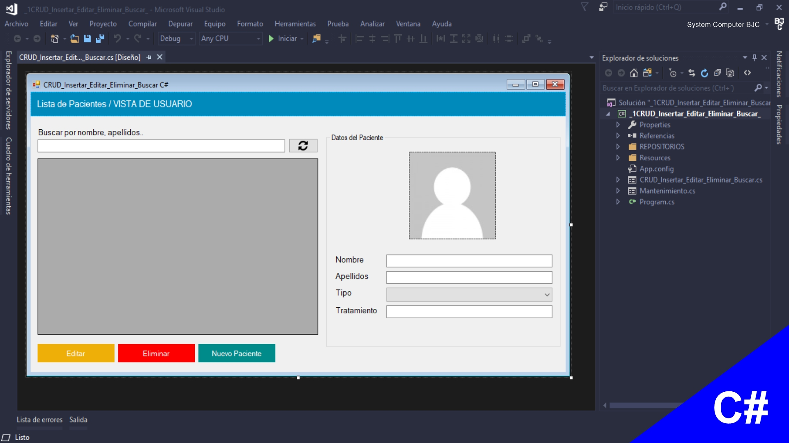
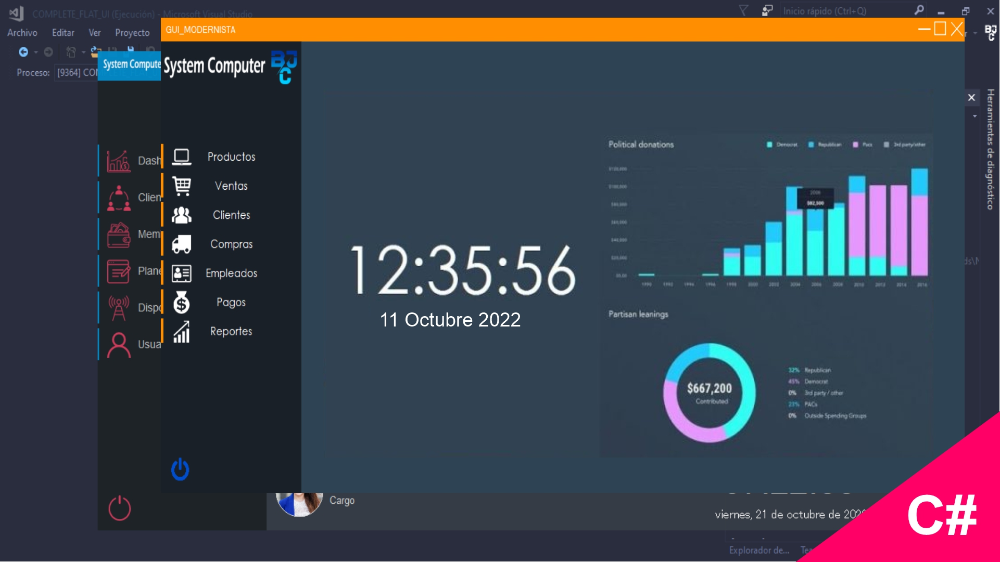
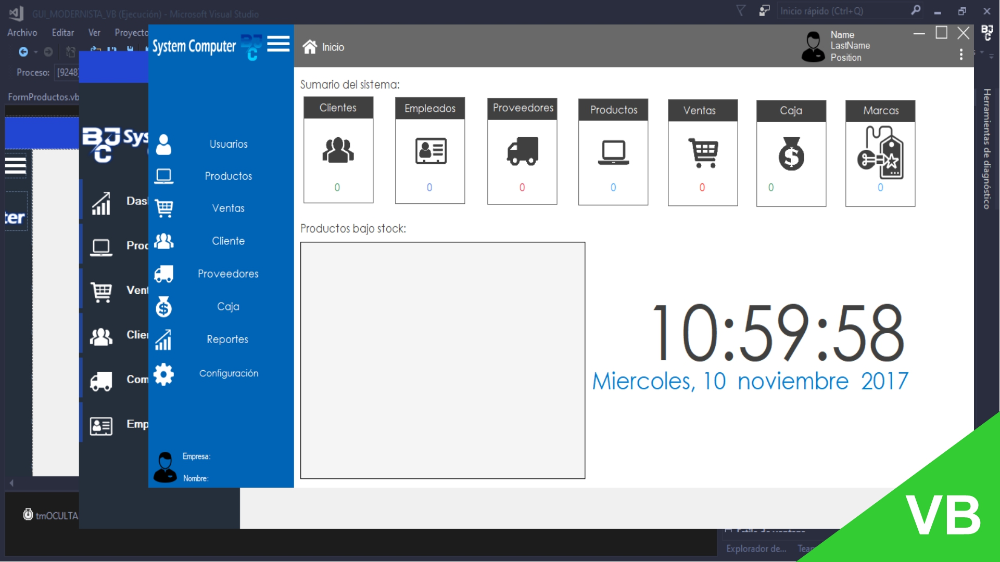
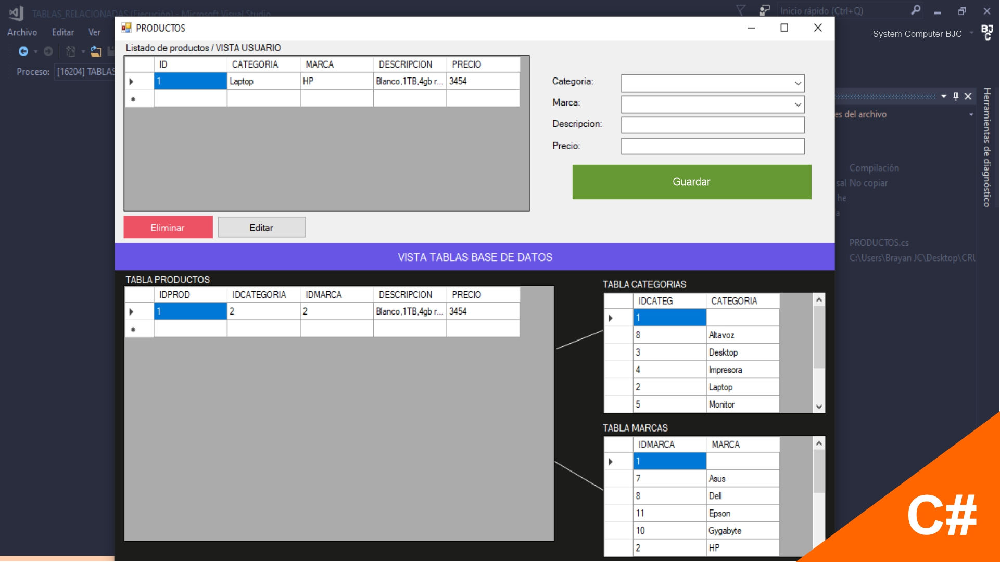
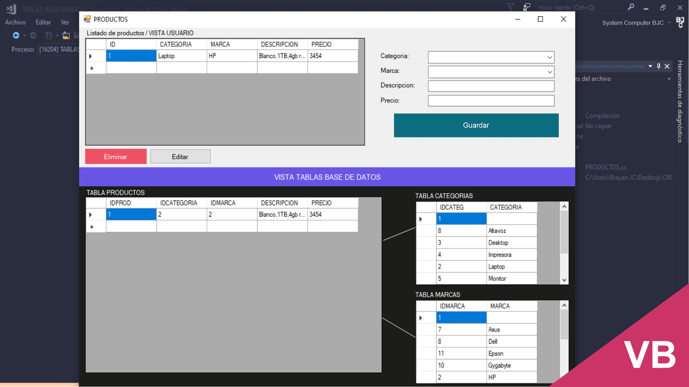
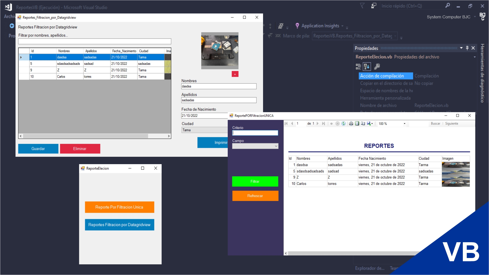
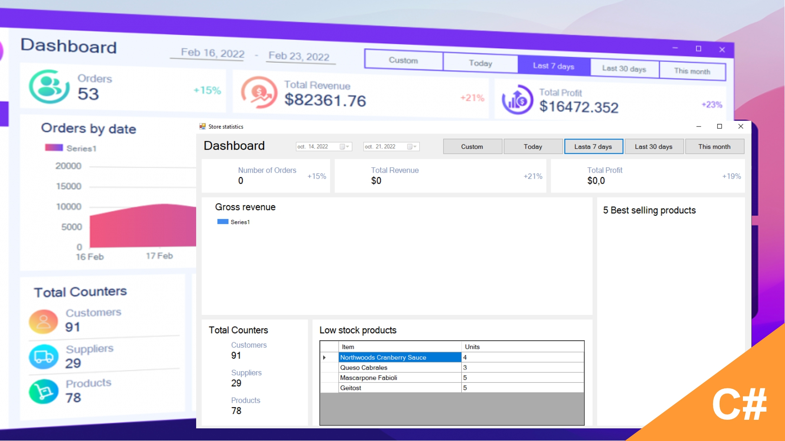
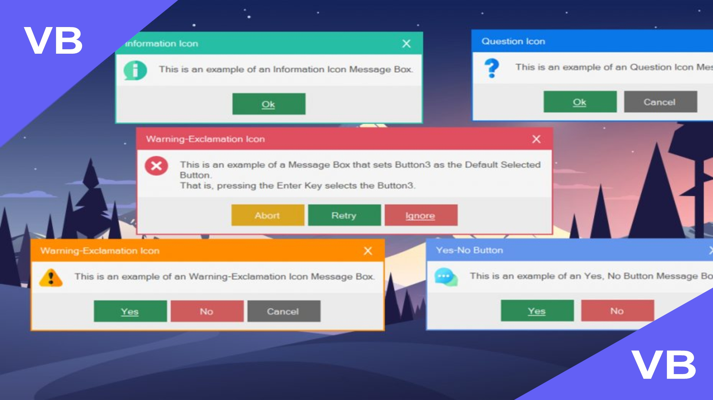

CRUD- Insertar, Editar, Eliminar Buscar y Mostrar Datos- C#, SQL Server

Hola, en esta oportunidad realizaremos las 5 operaciones CRUD (Search, Insert, Read, Update, Delete) en una base de datos SQL Server, desde una aplicación de Windows Form en C#, programación orientada a objetos, Este tutorial está orientada para aquellas personas que empiezan a indagar en programación orientada a objetos y arquitectura en capas, para entender algunos principios de POO y el flujo entre capas (NIVEL BASE).
Enlace
CRUD- Insertar, Editar, Eliminar Buscar y Mostrar Datos- VB, SQL Server

De igual manera realizaremos las 5 operaciones CRUD (Search, Insert, Read, Update, Delete) en una base de datos SQL Server, desde una aplicación de Windows Form en VB, programación orientada a objetos, Este tutorial está orientada para aquellas personas que empiezan a indagar en programación orientada a objetos y arquitectura en capas, para entender algunos principios de POO y el flujo entre capas (NIVEL BASE).
Enlace
ModernFlat - GUI-Version C# Completa - master

Hola, ahora desarrollaremos la interfaz gráfica de usuario del formulario menu principal con un menú deslizante animado, con C#.NET y windows form en visual estudio.
Enlace
ModernFlat - GUI-Version VB Completa - master

Hola, ahora desarrollaremos la interfaz gráfica de usuario del formulario menu principal con un menú deslizante animado, con visual basic .NET y windows form en visual estudio.
Enlace
CRUD con Tablas Relacionadas, Editar, Eliminar Datos, C#, SQL, SP, Capas, POO, ComboBox- Nivel Base

Hola, en este tutorial realizaremos como insertar datos CON tablas relacionadas mediante combo box que muestra los data de cada tabla relacionada y contiene el ID (Clave primaria), tambien, mostraremos los datos de las tablas relacionadas en un datagridview usando INNER JOIN. Todo ello con C Sharp, Windows Form, Arquitectura en capas y SQL Server. Para este tutorial solo será necesario la capa de presentación y acceso a datos, ya que la aplicación no tiene lógica de negocios, por lo tanto, no tendría sentido usar la capa de dominio o negocio.
Enlace
CRUD con Tablas Relacionadas, Editar, Eliminar Datos, VB, SQL, SP, Capas, POO, ComboBox- Nivel Base

Hola, en este tutorial realizaremos como insertar datos CON tablas relacionadas mediante combo box que muestra los data de cada tabla relacionada y contiene el ID (Clave primaria), tambien, mostraremos los datos de las tablas relacionadas en un datagridview usando INNER JOIN. Todo ello con VB, Windows Form, Arquitectura en capas y SQL Server. Para este tutorial solo será necesario la capa de presentación y acceso a datos, ya que la aplicación no tiene lógica de negocios, por lo tanto, no tendría sentido usar la capa de dominio o negocio.
Enlace
Reportes VB.Net, RDLC, Report Viewer, POO y SQL Server

Realizaremos un reporte con VB.Net, RDLC, Report Viewer, POO y SQL Server para poder pasar los datos de un Textbox a un informe RDLC con imagen, para asi poder imprimir, exportar, guardar, etc
Enlace
Reportes C#.Net, RDLC, Report Viewer, POO y SQL Server

Realizaremos un reporte con C#.Net, RDLC, Report Viewer, POO y SQL Server para poder pasar los datos de un Textbox a un informe RDLC con imagen, para asi poder imprimir, exportar, guardar, etc
Enlace
Plantillas HTML - CSS - JAVA
Puedes descargar algunas plantillas HTML para tus proyectos estudiantiles, universitarios, etc, agregarlos o modificarlos tu antojo.
Enlace
Crear Panel de Datos (Dashboard) – C#, SQL Server, WinForms & POO

Crear un Tablero de Datos por Rango de Fechas, por Este Mes, Hoy, Últimos 7 Días, Últimos 30 Días o una Fecha Personalizada, utilizando lenguaje de programación C#, base de datos SQL Server, Windows Forms y Programación Orientada a Objetos (POO).
Enlace
Cuadro de Mensaje Personalizado, VB (Visual Basic) & WinForms

Hola, hoy les mostraré cómo crear un cuadro de mensaje personalizado con Windows Forms, Visual Basic .NET (VB). Básicamente este cuadro de mensaje personalizado hace todo lo que hace un cuadro de mensaje estándar, por ejemplo, establecer el texto, un titulo, botones, icono, botón predeterminado y devuelve el valor seleccionado por el usuario en el cuadro de diálogo (DialogResult).